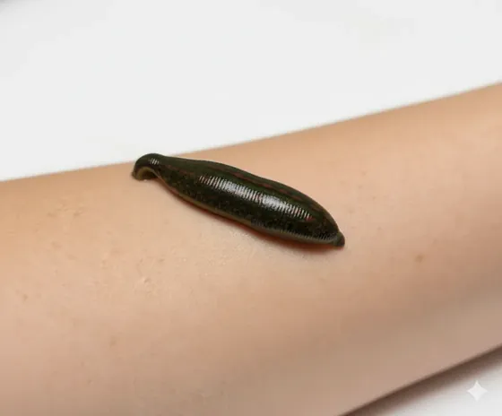
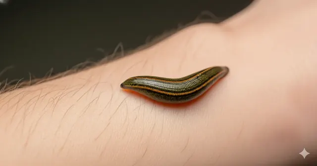

Sülük Tedavisi & Bilgi Merkezi
Doğal gölet sülüklerinin biyoaktif enzimleri, hangi hastalıklarda hangi boy sülüğün kullanılacağı ve doğru uygulama protokolleri hakkında hazırladığımız kapsamlı rehberler.
Sülük Bakımı, Saklama ve Sıkça Sorulan Sorular (SSS)
Evde sülük nasıl canlı ve sağlıklı saklanır? Klorsuz suyun önemi, kavanoz tülbentleme kuralı, tek kullanımlık standardı ve tüm temel soruların cevapları.
Sipariş, Kargo, Boy Seçimi & Bakım Rehberleri
Türkiye Geneli 81 İl Alıcı Rehberleri
81 İle Canlı Sülük Kargo Nasıl Gönderilir?
Yaz-kış termal strafor paketleme, bölgelere göre 1-3 gün teslimat tablosu, 2.500 TL ücretsiz kargo ve canlı teslimat garantisi.

Hangi Boy Sülük Nerede Kullanılır?
Botoks (65 TL), Orta (80 TL) ve Büyük (95 TL) boy Verbana farkları, kullanım bölgeleri ve ücretsiz kargolu hazır paket seçimi.
Evde Canlı Sülük Nasıl Saklanır?
Kargodan çıkan sülüğe ilk 15 dakikada yapılacaklar, klorsuz su seçimi, yaz-kış su değişim takvimi ve sık yapılan 5 kritik hata.
Uygulama & Hirudoterapi Rehberleri
Tür Bilgisi ve Uygulama ProtokolleriVerbana Sülük Nedir? Medicinalis ile Farkı
Önceden yaygın olan Medicinalis yerine günümüzde hekimlerin ve uygulayıcıların neden özellikle Verbana sülük aradığını, yüksek enzim potansı ve kargo dayanıklılığını inceleyin.
Varis Tedavisinde Sülük Nasıl Uygulanır?
Bacaklardaki toplardamar genişlemesi ve venöz basınca karşı neden damar yanlarına uygulama yapıldığı, boy seçimi ve güvenlik kuralları.

Hacamat ve Sülük Birlikte Nasıl Uygulanır?
İki yöntemin farkları, doğru seans sırası, bekleme süresi ve hacamat merkezleri için toptan Verbana tedarik rehberi.
Diz Kireçlenmesi & Menisküste Sülük Tedavisi
Diz eklem sıvısı azalması ve menisküs ağrılarında uygulama noktaları, boy seçimi, pansuman ve güvenlik kriterleri.
Sipariş öncesi boy seçimi, evde bakım veya şehrinize teslimat süresi hakkında WhatsApp hattımızdan hızlıca bilgi alabilirsiniz.
WhatsApp'tan Danışın